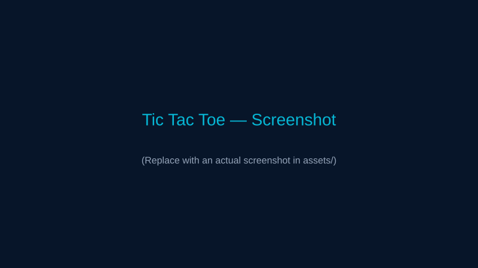
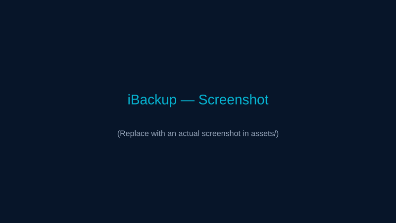

Tic Tac Toe
A classic two-player Tic Tac Toe game implemented in JavaScript with input validation, win-condition checks, and a clean UI. Strengthened control flow and game logic skills.
Tech: JavaScript, HTML, CSS
B.E. CSE (Cybersecurity) student building small apps and web projects. I focus on clean UX, solid logic, and practical tools.
See my work
A classic two-player Tic Tac Toe game implemented in JavaScript with input validation, win-condition checks, and a clean UI. Strengthened control flow and game logic skills.
Tech: JavaScript, HTML, CSS

Java-based desktop application to create secure backups of important files and restore them when needed. Focuses on data protection and reliability.
Tech: Java, File I/O
I'm a B.E CSE (Cybersecurity) student (2024–2028) passionate about algorithms, secure systems, and building practical applications. I enjoy solving problems, learning new tools, and improving code quality.
Phone: 9629616965
Email: kamalesh.kv2024csecs@sece.ac.in
LinkedIn: Kamalesh K V